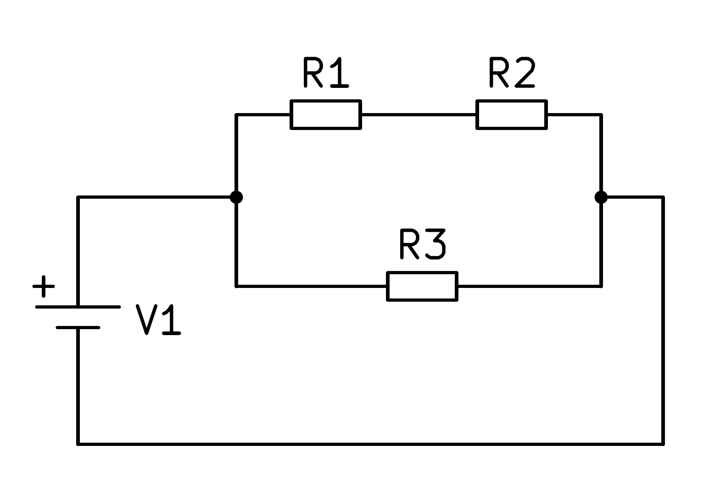
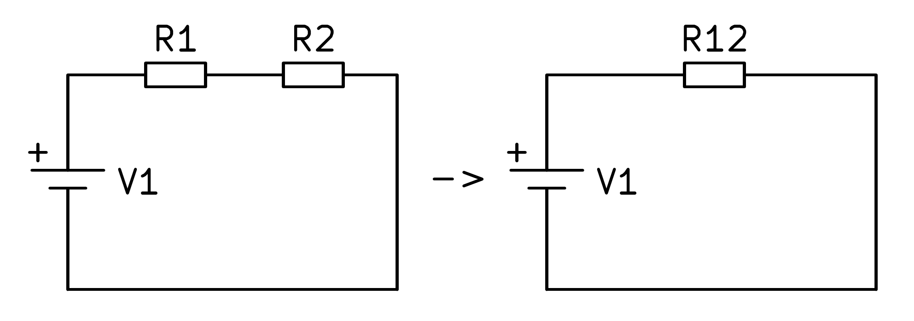
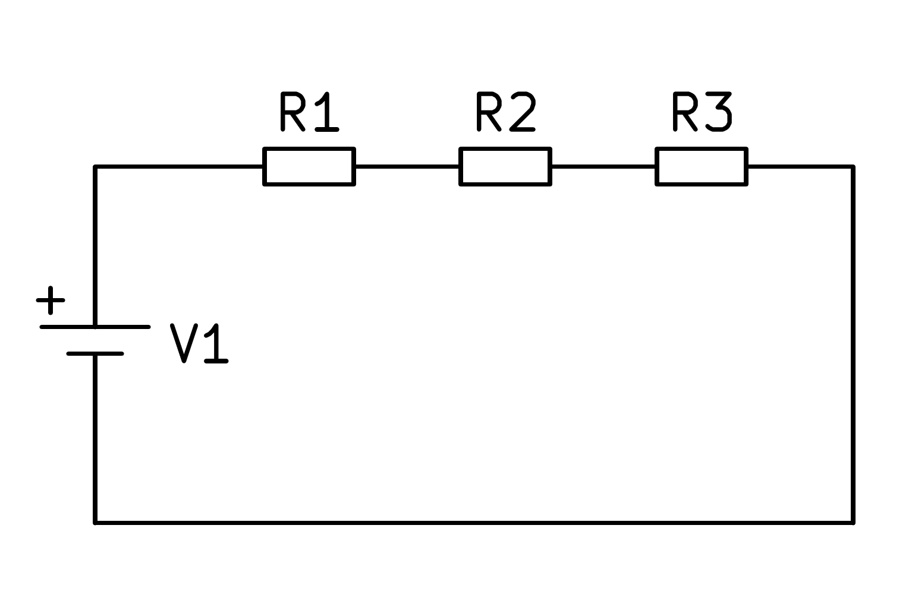
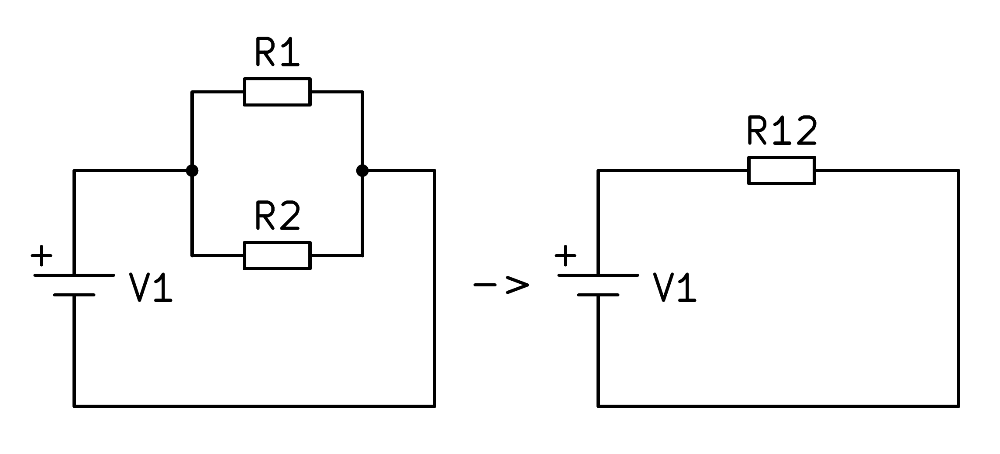
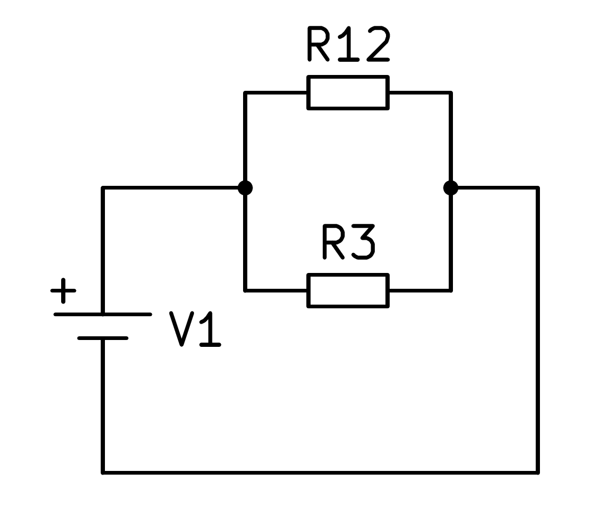
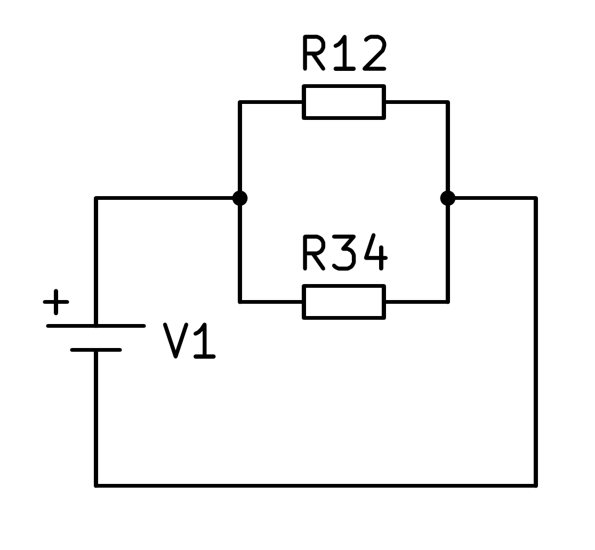

Resistencias equivalentes¶
En esta unidad se estudiarán las resistencias equivalentes de circuitos con resistencias en serie, con resistencias en paralelo y con resistencias en montajes mixtos.
{kind=link}
Una resistencia equivalente a un circuito con varias resistencias es aquella por la que pasará la misma corriente que por el circuito al alimentarlos con la misma fuente de tensión.
Índice de contenidos:
- Resistencia equivalente de un circuito en serie
- Resistencia equivalente de un circuito en paralelo
- Resistencia equivalente de un circuito paralelo-serie
- Resistencia equivalente de un circuito serie-paralelo
- Resistencia equivalente de un circuito dos series-paralelo
- Resistencia equivalente de un circuito dos paralelos-serie
- Ejercicios
- Cuestionarios
Resistencia equivalente de un circuito en serie¶
Un circuito con resistencias en serie está configurado como el de la siguiente figura:
{kind=link}
Este circuito se puede simplificar en un circuito con una sola resistencia que tenga un valor equivalente a las dos resistencias en serie. Este circuito se denomina circuito equivalente y por él circulará la misma corriente que por el circuito con dos resistencias.
Para calcular el valor de la resistencia equivalente a un circuito en serie, se deben sumar los valores de todas las resistencias en serie según la siguiente fórmula:

En el caso de que el circuito esté compuesto por tres resistencias en serie:
{kind=link}
se deberán sumar los valores de las tres resistencias para calcular el valor de la resistencia equivalente, según la siguiente fórmula:

Si a un circuito le añadimos una resistencia en serie la resistencia total siempre aumentará y por lo tanto la corriente total siempre disminuirá.
Resistencia equivalente de un circuito en paralelo¶
En la siguiente figura se puede ver un circuito con resistencias en paralelo y su circuito equivalente con una sola resistencia:
{kind=link}
En el caso de un circuito con resistencias en paralelo, la resistencia equivalente se calculará con el inverso de la suma de las inversas de las resistencias según la siguiente fórmula:

La resistencia equivalente de un paralelo siempre será menor que cualquiera de las resistencias que forman el paralelo.
Si el circuito está formado por tres resistencias en paralelo, el cálculo puede extenderse a tres resistencias en total según la siguiente fórmula:


Si a un circuito le añadimos una resistencia en paralelo, la resistencia total siempre disminuirá y por lo tanto la corriente total siempre aumentará.
Resistencia equivalente de un circuito paralelo-serie¶
Los circuitos mixtos están compuestos por resistencias en serie y por resistencias en paralelo. Para resolver los circuitos mixtos primero habrá que resolver los circuitos serie o paralelo interiores y con el circuito ya simplificado resolver los circuitos serie o paralelo exteriores.
A continuación veremos varios ejemplos.
En la siguiente figura podemos ver un circuito mixto de tres resistencias:

En este circuito mixto primero hay que resolver el paralelo formado por las resistencias R2 y R3, con lo cual el circuito se simplifica según la siguiente imagen.

A continuación se pueden sumar las resistencias R1 y R23 para calcular la resistencia equivalente del circuito completo:
Resistencia equivalente de un circuito serie-paralelo¶
En la siguiente figura podemos ver otro circuito mixto de tres resistencias.
En este circuito mixto primero hay que resolver la serie formada por las resistencias R1 y R2 sumando sus valores, con lo cual el circuito se simplifica según la siguiente imagen:
{kind=link}
A continuación se puede calcular el paralelo de las resistencias R12 y R3 para hallar la resistencia equivalente del circuito completo:
Resistencia equivalente de un circuito dos series-paralelo¶
En la siguiente figura podemos ver un circuito mixto de cuatro resistencias:

En este circuito mixto primero hay que calcular el equivalente en serie de las resistencias R1 y R2 y por otro lado el equivalente en serie de las resistencias R3 y R4, con lo que el circuito se simplifica según la siguiente imagen:
{kind=link}
Una vez simplificado el circuito, se puede calcular el paralelo de las dos resistencias R12 y R34 según la fórmula correspondiente:
Resistencia equivalente de un circuito dos paralelos-serie¶
En la siguiente figura podemos ver otro circuito mixto de cuatro resistencias:

En este circuito mixto primero hay que calcular el equivalente en paralelo de las resistencias R1 y R2 y por otro lado el equivalente en paralelo de las resistencias R3 y R4, con lo que el circuito se simplifica según la siguiente imagen:

Una vez simplificado el circuito, se puede calcular la serie de las dos resistencias R12 y R34 según la fórmula correspondiente:
Ejercicios¶
Ejercicios de cálculo de resistencias equivalentes en serie, en paralelo y en circuitos mixtos.